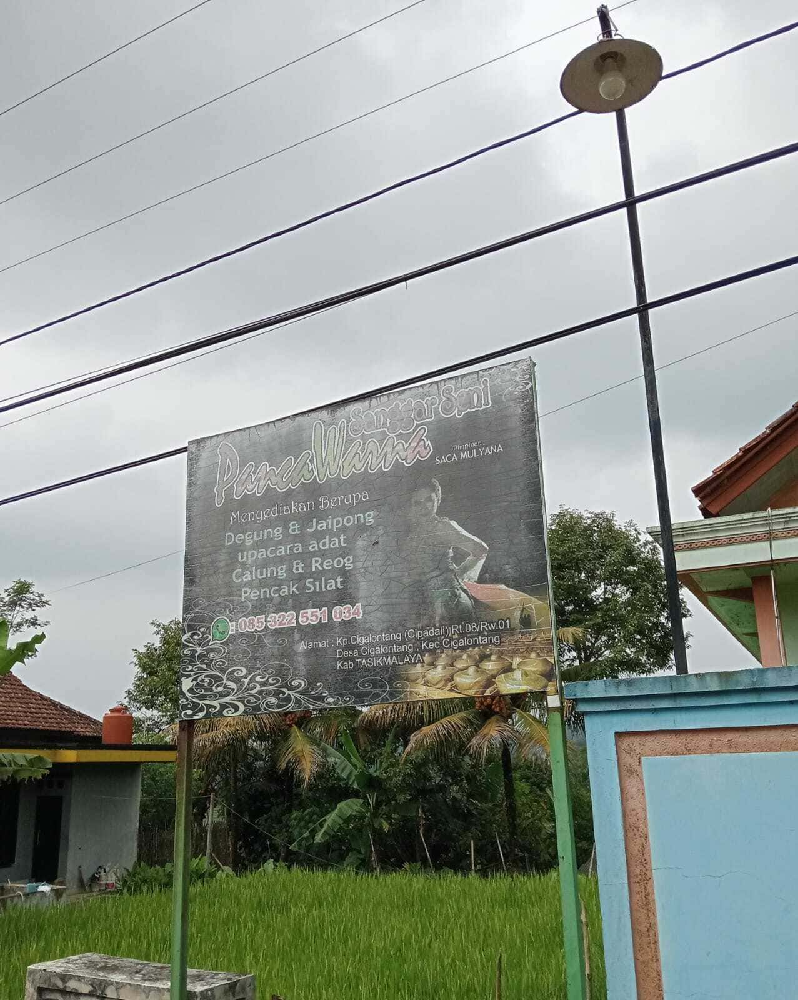
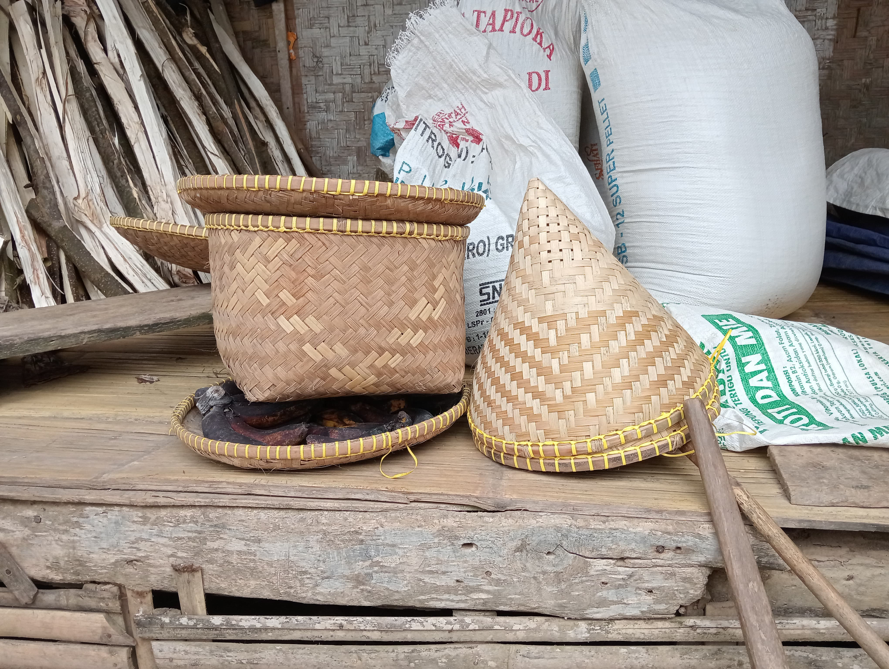

A. Wisata Alam
1. Bukit Pilar

Bukit Pilar adalah salah satu destinasi wisata alam yang terletak di Kecamatan Cigalontang, Kabupaten Tasikmalaya,
Jawa Barat. Tempat ini dikenal dengan pemandangannya yang indah dan suasana alam yang asri, menjadikannya tujuan
favorit bagi pecinta alam dan wisatawan lokal. Bukit ini berada di ketinggian 1270 MDPL yang memberikan panorama
luas dengan latar pegunungan, hamparan sawah, dan perkampungan khas pedesaan.
B. Wisata Buatan
1. Situ Pangangonan

Situ Pangangonan yang terletak di Desa Cogalontang, Kecamatan Cogalontang, Kabupaten Tasikmalaya,
menawarkan pengalaman wisata yang cukup menarik, terutama bagi para penggemar aktivitas pemancingan.
Danau buatan yang menjadi pusat wisata ini tidak hanya menyajikan pemandangan alam yang indah dan asri,
tetapi juga menjadi tempat yang ideal untuk menikmati kegiatan memancing yang menenangkan.
Dengan air danau yang jernih dan dikelilingi oleh alam pegunungan, Situ Pangangonan menjadi destinasi
yang pas untuk melepas penat. Pengunjung dapat memancing berbagai jenis ikan di danau, baik untuk
sekadar bersantai atau mencari tantangan. Fasilitas yang ada juga mendukung kenyamanan pengunjung,
seperti area pemancingan yang teratur, gazebo, serta spot foto yang bisa dimanfaatkan untuk
mengabadikan momen.
Selain aktivitas memancing, tempat ini juga menawarkan suasana yang tenang dan jauh dari keramaian
kota, menjadikannya tempat yang cocok untuk berkumpul bersama teman atau keluarga. Dengan lokasinya
yang mudah dijangkau dari pusat Kota Tasikmalaya, Situ Pangangonan bisa menjadi alternatif liburan
yang menyegarkan sekaligus memberikan pengalaman yang berbeda.
C. Wisata Budaya
1. Jaipong
Jaipong adalah seni tari tradisional khas Jawa Barat yang dikenal sebagai simbol budaya Sunda.
Sebagai salah satu bentuk seni yang kaya akan nilai estetika dan makna budaya, jaipongan telah menjadi daya tarik
wisata budaya yang unik. Wisata ini menawarkan pengalaman mendalam bagi
pengunjung untuk mengenal lebih dekat seni tari, musik pengiring, dan makna filosofis yang terkandung dalam setiap gerakan.
2. Sanggar Seni Pancawarna

Sanggar Seni Pancawarna, yang didirikan pada tahun 1980-an oleh Pak Saca Mulyana,
merupakan pusat pelestarian seni budaya khas Sunda yang berlokasi di Dusun 1, Desa Cigalontang,
Kecamatan Cigalontang. Bertempat di balai sawala sebagai pusat latihan secara rutin, menjadi
titik kumpul bagi masyarakat yang ingin belajar dan melestarikan tradisi lokal. Sanggar ini
menghidupkan kembali berbagai kesenian tradisional, seperti degung klasik, jaipong, silat dengan
gerakan khas seperti parepet, tapak 2, dan tapak 3, serta musik Sunda dengan alat seperti kecapi,
suling, kendang, saron, bonang, dan gong.
Dengan kegiatan rutin yang dilaksanakan setiap malam Sabtu, Sanggar Seni Pancawarna tidak hanya
menjadi ruang untuk belajar seni, tetapi juga berperan sebagai penjaga identitas budaya desa.
Meski menghadapi tantangan modernisasi, sanggar ini tetap eksis melalui kontribusinya dalam
berbagai acara adat, undangan budaya, dan kegiatan pelestarian seni lainnya. Didukung oleh
legalitas resmi dari pemerintah Kabupaten Tasikmalaya, Sanggar Seni Pancawarna menjadi simbol
kebanggaan warga lokal, menawarkan pengalaman autentik bagi pengunjung desa wisata.
D. UMKM (Usaha Mikro, Kecil, dan Menengah)
1. Keripik Singkong Arneta

2. FARMER’S COFFEE CIGALONTANG
Farmer’s Coffee Cigalontang adalah produk UMKM unggulan dari Desa Cigalontang, Kabupaten Tasikmalaya, yang dihasilkan dari biji kopi pilihan hasil budidaya ramah lingkungan oleh petani lokal. Diproses secara tradisional namun tetap menjaga kualitas modern, kopi ini menawarkan cita rasa khas dan autentik dalam berbagai varian, seperti bubuk kopi dan kopi siap seduh, termasuk kopi Arabica dengan rasa keasaman ringan, manis alami, aroma floral, dan rasa akhir lembut bernuansa kacang-cokelat dalam varian natural, honey, dan wine, serta kopi Robusta dengan karakter tebal, pahit, dan sentuhan earthy-nutty. Produk ini tidak hanya menjadi kebanggaan daerah, tetapi juga mendukung pemberdayaan ekonomi petani lokal dan keberlanjutan UMKM. Farmer’s Coffee Cigalontang telah dipasarkan di tingkat regional, nasional, dan global, termasuk ekspor ke Swiss, Dubai, Malaysia, dan Thailand, serta tersedia di berbagai wilayah Indonesia seperti Jakarta, Sumatra, dan Kalimantan, dengan harga yang kompetitif dan fleksibel untuk grosir atau reseller, mulai dari Rp20.000 per 500 gram untuk gula aren cetak tradisional.
3. PABENTANG (Pandai Besi Cigalontang)

4. Pengrajin Anyaman Ki Amar
Anyaman Ki Amar adalah usaha kerajinan tangan yang menghasilkan produk berbahan dasar bambu, seperti boboko (tempat nasi/makanan), dudukuy (penutup kepala), dan aseupan (wadah untuk mengukus makanan). Proses pembuatan dimulai dengan pemilihan bambu berkualitas, yang dijemur dan diolah dengan teknik diwengkung dan diraut. Produk ini dipasarkan melalui pengepul yang menjualnya ke pasar lokal dengan harga sekitar 10 ribu rupiah per buah atau 200 ribu rupiah perkodi. Usaha ini dikelola oleh Pak Amar (87 tahun) dan istrinya (74 tahun) di Kampung Paniis, Desa Cigalontang, Kecamatan Cigalontang, Kabupaten Tasikmalaya. Lokasi usaha ini memanfaatkan sumber daya alam bambu. Produksi Anyaman ini telah dilaksanakan selama bertahun-tahun, menghasilkan produk yang tidak hanya memenuhi kebutuhan praktis tetapi juga melestarikan tradisi lokal.
5. Gula Aren Pak Sarim

6. Wajit Mak Eroh

7. Pembuatan Sarung Golok

Pembuatan Sarung Golok Pak Engkus adalah usaha kerajinan tangan yang mengkhususkan pada pembuatan sarung golok dan pegangan perkakas lainnya, menggunakan bahan kayu mahoni berkualitas. Setiap produk dibuat dengan desain polosan atau ukiran yang dapat disesuaikan dengan permintaan pelanggan, dengan waktu produksi satu hingga tiga hari, dengan pertimbangan tingkat kesulitan ukiran. Harga produk sarung golok berkisar antara 100.000 hingga 200.000 IDR, dan dipasarkan melalui distributor atau pesanan langsung. Selain sarung golok, Pak Engkus juga memproduksi pegangan untuk golok, parang, pisau, dan alat perkakas lainnya. Usaha ini berlokasi di Kampung Paniis, Desa Cigalontang, Kecamatan Cigalontang, Kabupaten Tasikmalaya.
8. Kebul Solder (Peternakan Domba Tangkas)

9. Gula Aren Bu Popong

Gula Aren adalah produk unggulan yang dihasilkan oleh Bu Popong di Kampung Paniis, Tasikmalaya. Usaha ini fokus pada produksi gula aren berkualitas tinggi dengan metode tradisional yang menjaga keaslian dan cita rasa alami. Bu Popong mengelola usaha dengan kapasitas produksi bervariasi antara 3 hingga 15 toros per hari, menghasilkan gula aren berkualitas dengan warna emas cerah, tekstur lembut, dan rasa manis yang khas. Produk ini dikenal aman dikonsumsi karena tidak menggunakan bahan kimia pengawet atau pewarna, memiliki masa simpan yang cukup lama, dan tekstur keras yang tidak mudah basah. Gula aren ini ideal untuk digunakan sebagai pemanis alami dalam berbagai jenis masakan dan minuman, mulai dari dessert klasik hingga saus khusus. Berlokasi di Kampung Paniis RT/RW 13/05, Desa Cigalontang, Kecamatan Cigalontang, Kabupaten Tasikmalaya, usaha ini memanfaatkan lingkungan pedesaan yang kaya akan sumber daya alam dengan keberadaan pohon aren di sekitarnya, mendukung produksi gula aren berkualitas tinggi. Suasana pedesaan yang tenang juga memfasilitasi dedikasi pekerja dalam menjaga standar mutu produk. Gula aren Bu Popong telah dikenal luas di kalangan konsumen lokal dengan potensi berkembang lebih jauh melalui strategi pemasaran seperti promosi di pasar tradisional, partisipasi dalam acara kuliner lokal, dan penggunaan media sosial untuk meningkatkan kesadaran merek. Dengan komitmen terhadap kualitas, metode produksi tradisional, dan inovasi dalam pengolahan serta pemasaran, Bu Popong terus berupaya menjaga warisan kuliner lokal sambil memenuhi kebutuhan pasar modern.
10. Pengolahan Ketan Hitam 1
Beras ketan hitam dari Cigalontang, Kabupaten Tasikmalaya, adalah salah satu hasil pertanian unggulan daerah yang memiliki kualitas tinggi dan cita rasa khas. Beras ini diminati karena teksturnya yang pulen, aroma harum, dan manfaat kesehatan yang melimpah. Produk ini telah dikenal luas, baik untuk kebutuhan rumah tangga maupun industri kuliner, dan sering dipasarkan ke kota-kota besar seperti Bandung dan Jakarta, serta dijual di pasar tradisional lokal. Keberadaan beras ketan hitam di Cigalontang tidak hanya memberikan nilai ekonomi bagi masyarakat, tetapi juga menjadi simbol keunggulan pertanian lokal yang mencerminkan kearifan budaya setempat. Dengan kualitas yang terjaga dan rasa khas, beras ketan hitam dari Cigalontang menjadi salah satu warisan kuliner yang patut dibanggakan.
11. Pengolahan Ketan Hitam 2

Beras ketan hitam dari Cigalontang, Kabupaten Tasikmalaya, adalah salah satu hasil pertanian unggulan daerah yang memiliki kualitas tinggi dan cita rasa khas. Beras ini diminati karena teksturnya yang pulen, aroma harum, dan manfaat kesehatan yang melimpah. Produk ini telah dikenal luas, baik untuk kebutuhan rumah tangga maupun industri kuliner, dan sering dipasarkan ke kota-kota besar seperti Bandung dan Jakarta, serta dijual di pasar tradisional lokal. Keberadaan beras ketan hitam di Cigalontang tidak hanya memberikan nilai ekonomi bagi masyarakat, tetapi juga menjadi simbol keunggulan pertanian lokal yang mencerminkan kearifan budaya setempat. Dengan kualitas yang terjaga dan rasa khas, beras ketan hitam dari Cigalontang menjadi salah satu warisan kuliner yang patut dibanggakan.
12. Peternakan Domba Pak Ajum

13. Pengolahan Rangining

Pengolahan Rangining adalah usaha UMKM yang memproduksi camilan tradisional khas Kecamatan Cigalontang, Kabupaten Tasikmalaya, seperti Rangining (dari tepung beras), Ranginang (dari ketan), Ro (dari singkong), dan Kemplang. Proses produksi melibatkan pengolahan bahan dasar seperti beras, ketan, atau singkong yang diparut, difermentasi, digiling menjadi tepung, diadon, dicetak, dan didiamkan selama sehari penuh untuk memastikan kualitas. Produk dijual dalam bentuk mentah dengan harga, seperti Rangining dan Ranginang 1/2 kg seharga Rp17.000 dan Ro 1/4 kg seharga Rp10.000. Produk ini sering dijadikan oleh-oleh dan dipasarkan di kota-kota besar seperti Jakarta dan Bandung. Usaha ini berlokasi di Kp. Ciparu, Desa Cigalontang, Kecamatan Cigalontang, Kabupaten Tasikmalaya, dan dikelola oleh Suhara.
14. Pembuatan Anyaman Ibu Tatih

15. Pengolahan Gula Aren